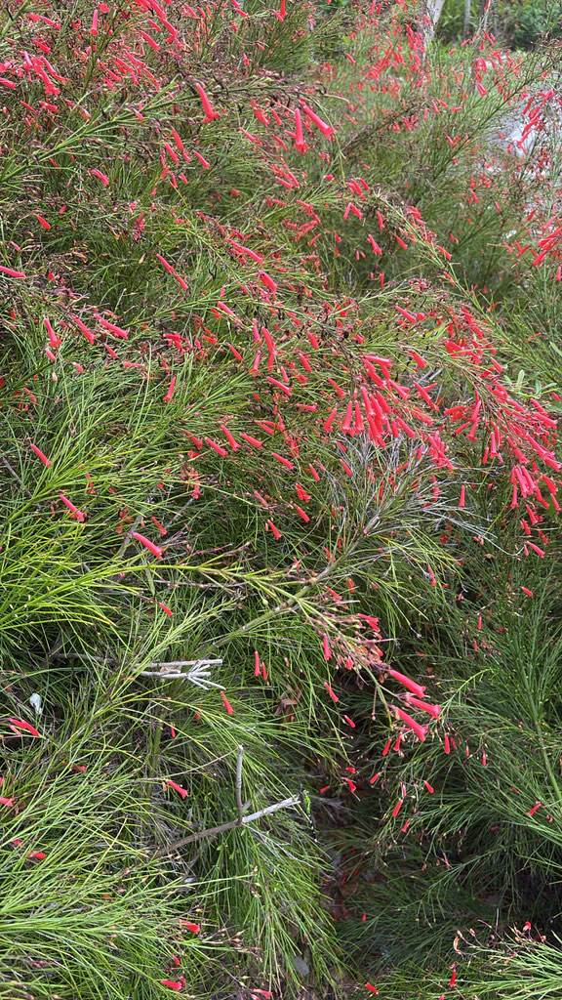

- Those wispy 'leaves' aren't leaves at all. What looks like fine green foliage is actually the stem itself — the true leaves are reduced to tiny bracts barely a sixteenth of an inch long on flowering branches. The plant essentially photosynthesizes through its stems, the same strategy used by cacti and horsetail rushes.
- The flowers are built for one visitor in mind. The long tubular corolla is precisely sized and shaped for a hummingbird's bill — too deep and narrow for most bees to reach the nectar effectively. The plant and the bird are in a relationship that predates gardens.
- It blooms nearly year-round in frost-free climates — not just in a seasonal flush, but continuously, making it one of the most persistently colorful shrubs you can grow in Central Florida.
- The genus name honors Alexander Russell, an 18th-century Scottish physician and naturalist. The species name — equisetiformis — means 'shaped like Equisetum,' the horsetail genus, which the plant resembles superficially but is not related to at all.
Firecracker plant is native to Mexico and Guatemala, where it grows in seasonally dry tropical habitats. It was introduced to ornamental horticulture long enough ago that the UK Royal Horticultural Society gave it its Award of Garden Merit in 1993 — by which point it had already been a greenhouse subject for well over a century.
It arrived in Florida cultivation as part of the broader wave of tropical ornamentals suited to zones 9–11, and it has since naturalized in some disturbed sites across the state. Today UF/IFAS lists it as a Florida-Friendly plant for pollinator and hummingbird gardens.
- The firecracker plant belongs to family Plantaginaceae — the same family as plantain and snapdragons — though older references place it in Scrophulariaceae. The genus Russelia encompasses roughly 50 species ranging from Mexico and Cuba south into Colombia; only a handful are in common cultivation, and R. equisetiformis is by far the most widely grown.
- The plant's rush-like appearance is no accident and no coincidence: its slender, arching green stems carry out most of the photosynthesis, while the leaves are reduced to inconspicuous scales or bracts — a water-conserving strategy well suited to the seasonally dry Mexican habitats where it evolved. When stems cascade over a wall or the edge of a container, the effect is often compared to a waterfall of green punctuated by red — a look that earned it the alternate name 'coral fountain.'
- Cascading stems will root where they contact soil, a habit that makes propagation almost effortless and also explains how the plant can spread beyond a planting bed in warm, moist conditions. Simple layering — pinning a stem to the soil and letting it root — and stem cuttings are the standard propagation methods used by Florida growers. The plant is notably pest-resistant, though it can occasionally be bothered by nematodes, spider mites, and chewing insects.
The firecracker plant is a documented hummingbird magnet. Its tubular red flowers are shaped and colored specifically for hummingbird pollination — the elongated corolla matches the length of a hummingbird's bill, and the red pigment is a color hummingbirds keenly detect. Ruby-throated hummingbirds, the species that migrates through and winters in Florida, readily visit plants in bloom.
Butterflies and native bees also work the flowers for nectar.
Because it blooms continuously through most of the year in Central and South Florida, the plant provides a persistent nectar resource during months when other garden plants have little to offer — including late fall and winter, when migrating or overwintering hummingbirds need reliable food sources most. UF/IFAS specifically recommends it for pollinator and hummingbird gardens.
Primarily vegetative: cascading stems root readily where they contact soil (layering), and the plant spreads outward from the base via new stems. Also propagated easily by stem cuttings taken in spring or early summer. Seed reproduction occurs but is not the primary means of spread in cultivated settings.
Tubular, bright coral-red flowers about 1 inch long, borne in loose, drooping sprays along the arching stems. Yellow and salmon-orange cultivars exist. Flowers are produced nearly year-round in frost-free Florida, with the heaviest display spring through fall.
Small, dry, inconspicuous capsules less than half an inch in diameter, brownish at maturity. Not ornamentally showy.
Slender, bright-green, ribbed stems that arch upward then cascade outward and downward, reaching 3–5 feet long. True leaves are reduced to tiny scales or bracts — barely a sixteenth of an inch long on flowering branches, slightly larger (up to roughly ½ inch) on vigorous vegetative shoots. The stems are the primary photosynthetic organs.
In cooler or drier conditions the plant may become partly deciduous, but stems remain green.
Start with the stems — slender, bright green, and rush-like, arching outward from the crown in every direction.
Look closely at where you'd expect leaves: you'll find only tiny bract-scales pressed against the stem. In bloom, the stems are tipped and lined with clusters of narrow, bright red tubular flowers, each about an inch long, drooping in loose sprays. Watch for hummingbirds working methodically along a blooming branch.
Near the base, check for stems that have touched the ground and rooted — the plant's quiet way of expanding its footprint.
Don't eat this plant — no part is a recognized food, and while it isn't considered significantly toxic and no serious poisoning cases are on record, its toxicity hasn't been well studied.
Treat it as non-edible.
For pets, Russelia isn't listed among plants known to be toxic to dogs or cats, and no poisoning reports are documented.
As a reasonable precaution, keep curious pets from chewing it, and contact your vet if a pet eats some and develops symptoms.
FAMILY NOTE: Russelia equisetiformis is now placed in Plantaginaceae (the plantain/snapdragon family) following molecular reclassification; older references list it under Scrophulariaceae. The genus Russelia contains approximately 50 species, all native to tropical America, but R. equisetiformis is by far the most widely cultivated. The RHS Award of Garden Merit was conferred in 1993.


- © Randall Carter (CC-BY-NC), via iNaturalist
- © Yavid Justiniano (CC-BY-NC), via iNaturalist